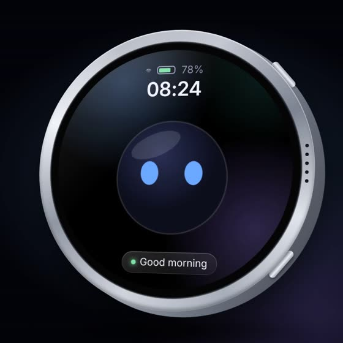
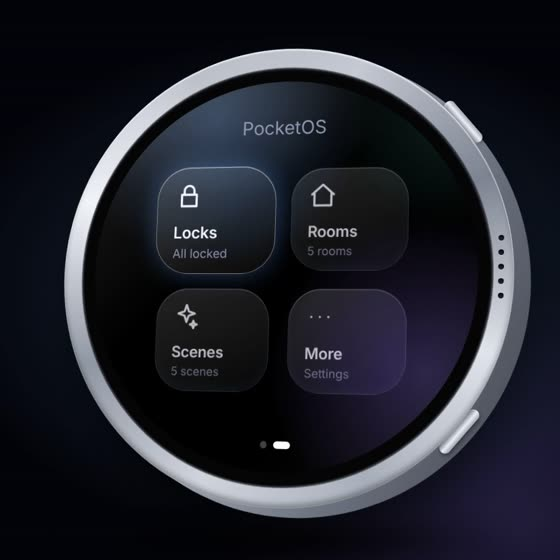
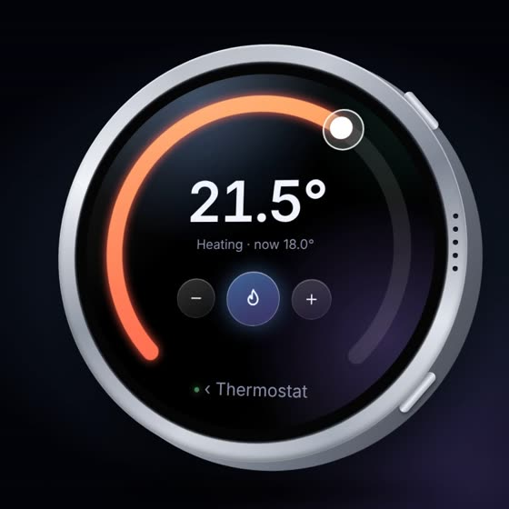
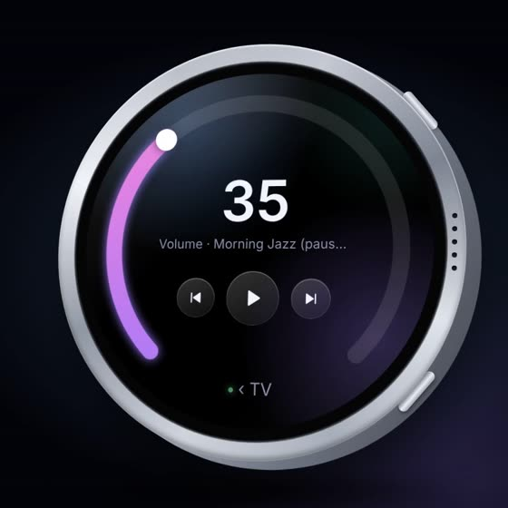

Introducing
PocketOS
A tiny companion for your whole home. A round glass screen that fits in your hand, with a little character that reacts to your house, and every light, radiator and speaker one swipe away.
Rendered preview of PocketOS on the Waveshare 1.75″ round AMOLED.

Meet your companion
Say hello.
It blinks, looks around and reacts the moment you touch it. Its mood follows your home, so you can tell what’s going on at a glance.
- Warm when the heating’s on, dancing when music plays
- Alert if a door is left unlocked
- Chilly when it’s cold outside, tired when its battery’s low
- Worried if it can’t reach your home

Your whole home
One swipe away.
Lights, heating, music, locks, blinds, plugs and scenes, straight from Home Assistant. Browse by room or by type, star your favourites, and choose which tiles go on the menu.

Live control
Turn up the heat.
Drag the glass dial round the edge of the screen. PocketOS shows a change as done only once your home confirms it, and changes made anywhere else show up live.

Music and TV
Volume in your palm.
Play, pause, skip and set the volume on speakers and TVs. Every control matches what that device can actually do.
Built to be yours
Private by design.
PocketOS talks only to your own home. There’s no account, no subscription and nothing to sign up for.
Nothing leaves your home
No cloud, advertising, analytics or tracking. Your devices and settings stay on PocketOS and your Wi-Fi.
Set up from your phone
PocketOS serves its own settings page. Scan the code on its Settings tile, pair with a 6-digit code, done.
Updates itself
New versions arrive by themselves. Install with a tap, or let it update overnight while it charges.
Knows its battery
Tracks its battery over two days and tells you how many hours it has left, based on how you use it.
Push to talk
Hold the side button and ask. It uses the voice assistant in your own Home Assistant.
Knows when you’re home
Sleeps when you leave to save battery, and wakes up to say welcome home when you’re back.
Getting started
Three steps.
Install PocketOS
Plug the board into a computer and press Install. Takes about five minutes, once. Install page
Join your Wi-Fi
Scan the code on its screen with your phone and pick your home Wi-Fi. Setup guide
Connect your home
Link Home Assistant and choose your favourites. We walk you through it. How it works